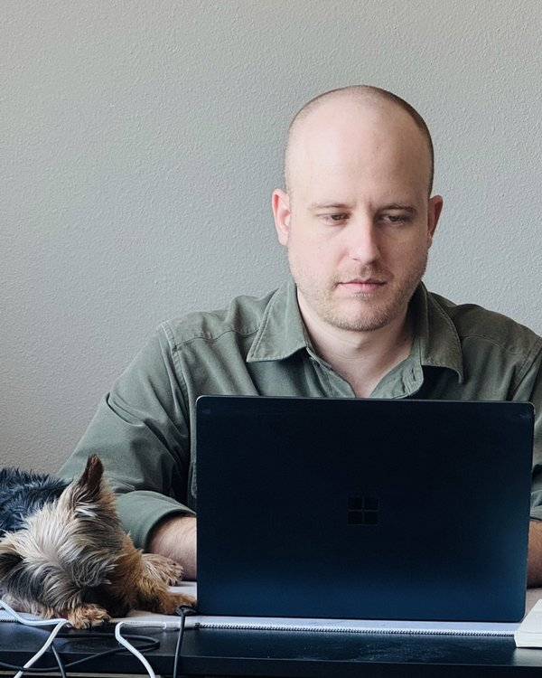

Government Affairs
Lobbyist & Regulatory Strategist · Dallas, Texas
About
I'm a lobbyist and regulatory consultant focused on global drug policy reform. As a principal at Jefferson & Associates, a Texas-based government affairs firm, I work with cannabis, hemp, and other regulated-industry stakeholders to navigate complex policy environments, shape legislation, and turn political risk into strategic advantage. My work spans federal and state lobbying, coalition building, and strategic communications — helping clients not just comply with the rules, but help write them.